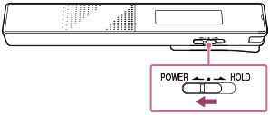

帮助指南
如何使用
数码录音棒
ICD-TX650
关闭电源
朝“
POWER
”方向滑动并按住
POWER・HOLD
开关，直到显示“
关机
”为止。

提示
即使IC录音机关闭时，也可以按
开启IC录音机并开始录音。
如果IC录音机处于停止模式，且将其闲置一段时间而未进行任何操作，“
自动关机
”功能将起作用。（“
自动关机
”前的时间长度在IC录音机出厂时即已设为“
10分钟
”。）
如果已设定睡眠定时器，则在经过睡眠定时器设定的时间长度后，IC录音机将自动关闭。
返回页首
相关主题
设置关闭IC录音机的闲置时间长度（
自动关机
）
使用睡眠定时器（
睡眠定时器
）
打开电源
使用一键功能开始录音
返回页首
如何使用
准备
录音
播放
编辑
设置菜单
电脑
软件
规格
通告
返回页首
故障排除
IC录音机操作
软件操作（Sound Organizer）
消息
系统限制
返回页首
主题列表
如何使用
故障排除
返回页首